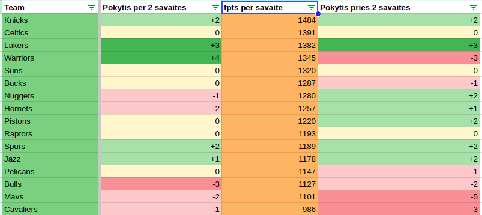
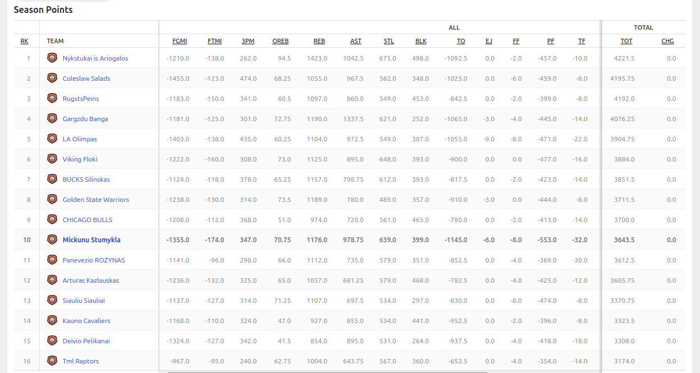

Dviejų savaičių apžvalga: Knicks skrydis i lentelės viršų
2024-12-03

Martyno Pelenio valdoma Knicks komanda sezoną pradėjo lėtai, bet vėliau visose apžvalgose, pradedant antra savaite, kilo į viršų. Kilo kilo, kol galiausiai pasiekė pačią viršūnę.
Negana to, apskritai per pastarąsias dvi savaites Marčius surinko beveik 1.5k fpts ir buvo nepralenkiamas taro visų A lygos dalyvių. Komandos lyderiu per šį laikotarpį netikėtai buvo Jalen Johnson,
kuris išties panašu bus bene didžiausia draftų vagystė šiais metais. Įdomu, kad taip komanda pavarė su kiek pakritusiu Lebrono žaidimu. Dar vienas įdomus dalykas - praeitas metais tokiu pat metu nykštukai irgi pirmavo, bet vėliau
traumos smarkiai sugadino komandos sezoną. Gal šiemet pasisamdė kinezų ir užsakė maldas? Pamatysim jau labai greit.:)
Sėkmingas laikotarpis buvo ir Medučio Celtics komandai, smarkiai priartėjusiai prie lyderių, Pauliaus Lakeriams ir Šaro Warriors. Lakers jau antrą apžvalgą iš eilės kyla per tris pozicijas ir turėtų jau po truputi
nervinti lyderius. Wariors su kiek atsigavusiu suomiu padarė didžiausią šuolį į viršų - net per keturias pozicijas. Šioje sezono stadijoje tokie šuoliai taps itin reti.
Pastarąsias dvi savaites pamiršti norėtų "Cavalieriai", "Mavs" ir "Bulls". Visos trys komandos jau antrą apžvalgą iš eilės krenta žemyn. Jei Cavalieriai turi viltį, kad sugrįžes KD ir kažkiek gyvybės pradedantis rodyti Haliburton patemps
komandą į priekį, tai Mavs ir Bulių stovykloje kažkokio optimizmo sunku surast.
Gyvybės ženklus pradėjo rodyti jau kiek nurašyti Raptoriai, kurie gal stebuklų ir neparodė, bet kažkiek atotrūkį nuo lentelės kaimynų sumažino. Bus įdomu stebėt, kaip galiorkoje, kovojančioje dėl išlikimo lygoje reikalai tęsis ir toliau.
Embiid korta čia irgi vaidins didelį vaidmenį, nes be jo gero žaidimo Pelikanams kažką nuveikt bus itin sunku.
2 savaičių laureatai
MVP: Anthony Davis, surinkęs daugiausiai - 304fpts.
Žybsinis: F.Wagner, rinkęs po 31,6fpts
Šūdas: N.Claxton visą sezoną kolkas vargstantis, o pastaruoju metu itin prastą formą berodantis.
Šios dienos lentelė:
